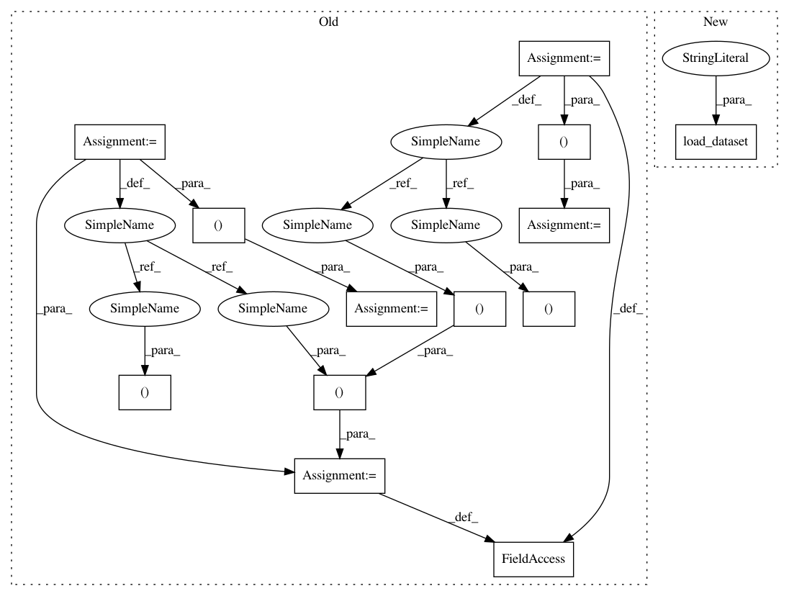

24cc9536e4969716b3080498426af8e47dee7907,tests/classifiers/test_tensorflow.py,TestTFClassifier,setUpClass,#Any#,41
Before Change
def setUpClass(cls):
// Get MNIST
(x_train, y_train), (x_test, y_test), _, _ = load_mnist()
x_train, y_train = x_train[:NB_TRAIN], y_train[:NB_TRAIN]
x_test, y_test = x_test[:NB_TEST], y_test[:NB_TEST]
cls.mnist = (x_train, y_train), (x_test, y_test)
cls.classifier, cls.sess = get_classifier_tf()
def setUp(self):
After Change
@classmethod
def setUpClass(cls):
(x_train, y_train), (x_test, y_test), _, _ = load_dataset("mnist")
cls.x_train = x_train[:NB_TRAIN]
cls.y_train = y_train[:NB_TRAIN]
cls.x_test = x_test[:NB_TEST]
In pattern: SUPERPATTERN
Frequency: 3
Non-data size: 13
Instances
Project Name: IBM/adversarial-robustness-toolbox
Commit Name: 24cc9536e4969716b3080498426af8e47dee7907
Time: 2019-08-17
Author: beat.buesser@ie.ibm.com
File Name: tests/classifiers/test_tensorflow.py
Class Name: TestTFClassifier
Method Name: setUpClass
Project Name: IBM/adversarial-robustness-toolbox
Commit Name: c8a9b2b2f14226567f2e1b42e7cf007b38c0fba3
Time: 2019-08-19
Author: beat.buesser@ie.ibm.com
File Name: tests/classifiers/test_pytorch.py
Class Name: TestPyTorchClassifier
Method Name: setUpClass
Project Name: IBM/adversarial-robustness-toolbox
Commit Name: 24cc9536e4969716b3080498426af8e47dee7907
Time: 2019-08-17
Author: beat.buesser@ie.ibm.com
File Name: tests/classifiers/test_tensorflow.py
Class Name: TestTFClassifier
Method Name: setUpClass
Project Name: IBM/adversarial-robustness-toolbox
Commit Name: 63d46b47ff64c9e93ed4c1698ffa955a00d2925e
Time: 2019-08-27
Author: beat.buesser@ie.ibm.com
File Name: tests/classifiers/test_detector_classifier.py
Class Name: TestDetectorClassifier
Method Name: setUpClass